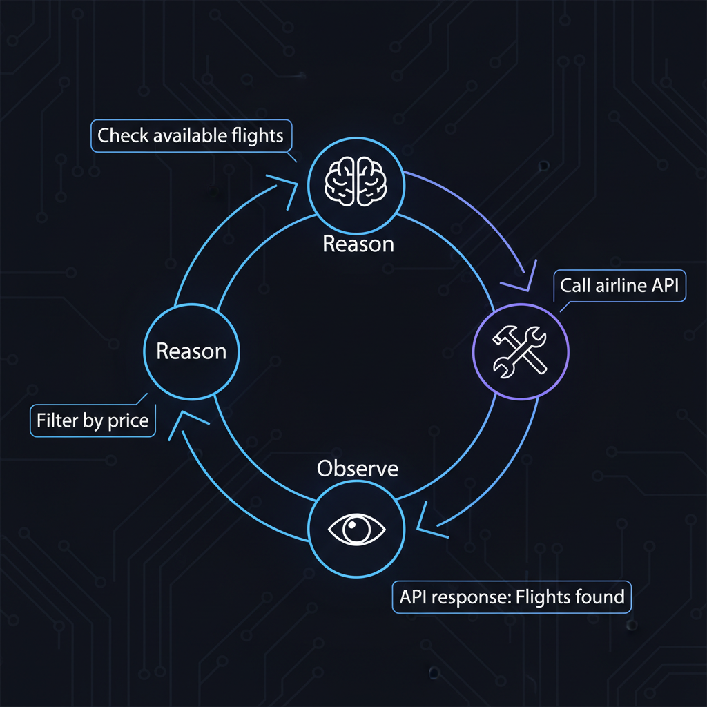
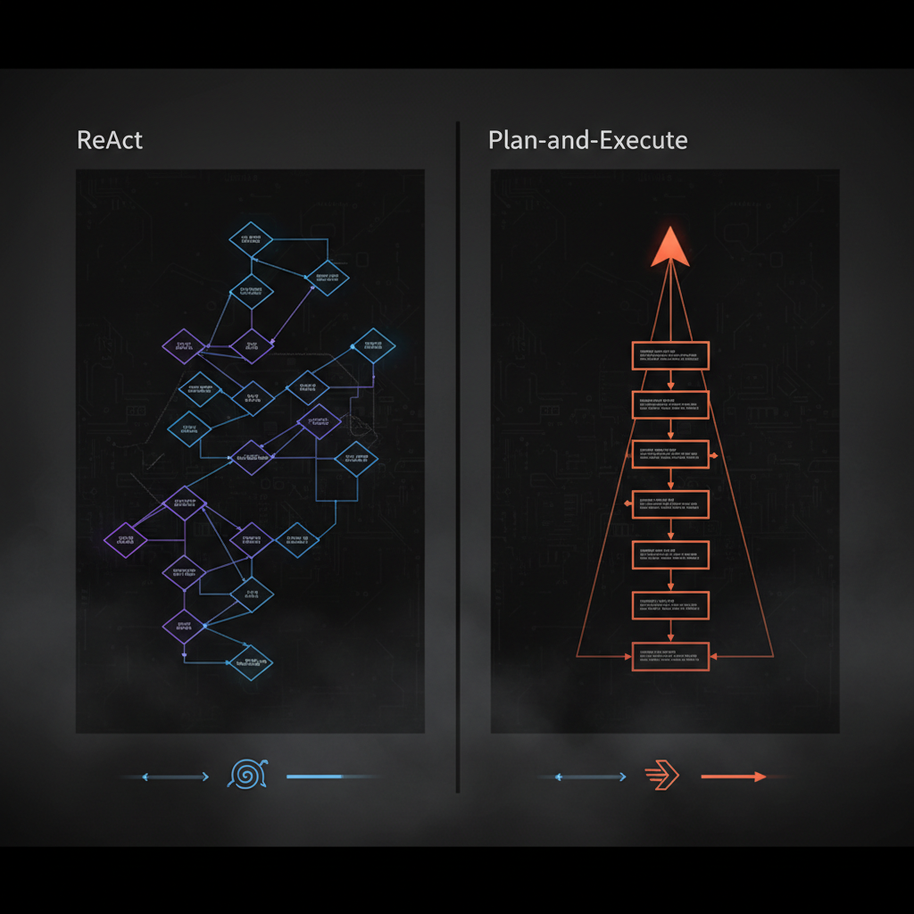

Imagina que você mantém um scraper que checa preços de voo todo dia antes da daily do time. Funcionou ontem: navega no site, clica em "Mais barato", coleta resultados, posta no Slack. Simples e previsível.
Hoje, falha. Silenciosamente. Você investiga. A airline redesignou a UI ontem à noite. O botão que dizia "Mais barato" agora diz "Tarifa mais baixa". Seu CSS selector aponta pra nada. A lógica da sua task (achar voo barato) continua válida. Mas suas instruções assumiram um mundo que não existe mais.
Você conserta. Uma semana depois, outra coisa muda. Conserta de novo. Isso é automação brittle — funciona perfeitamente em condições estreitas, quebra se qualquer coisa muda.
Considere uma abordagem diferente: em vez de escrever código que clica num elemento específico, você dá ao AI agent uma meta: "Encontre o voo mais barato pra Tóquio neste mês". Esse post — adaptação enriquecida em PT-BR de "AI Agents Explained" de Sairam Sundaresan e Neo Kim — abre a tampa do que é, mecanicamente, um agent.
Agent vs Chatbot — a diferença que tudo muda
A distinção mais simples: chatbot fala, agent faz.
Pede pra um chatbot reservar um voo: ele explica como — o que procurar, o que comparar, talvez um link. Útil, mas nada muda no mundo.
Pede pra um agent reservar um voo: ele abre browser, chama APIs, compara preços, filtra por suas constraints. Checa se há assentos. Se der erro de pagamento, tenta de novo. Quando sucede, confirma o booking e te manda o recibo. No fim, você tem uma passagem.
Esse side effect (mudar o mundo) é o que separa agents.
A analogia do estagiário digital
Um agent é como estagiário inteligente mas inexperiente. Você não micromanage o teclado dele. Você diz:
"Reserve voo pra Tóquio, abaixo de R$2.500, no próximo mês. Use o cartão corporativo. Me manda a confirmação."
Você seta a meta e dá o necessário pra trabalhar: acesso ao site de viagem, dados de pagamento, email. Também seta limites: budget, preferências de airline, regra contra voo madrugada. Ele resolve o resto.
Mas tem caveat que a analogia não captura: estagiário erra em velocidade humana. Uma tarefa, pausas naturais — fácil pegar. Agent erra em escala instantânea. Dê acesso ao email com "follow up com leads", ele pode mandar 200 mensagens bizarras antes de qualquer um notar.
Agents precisam de boundaries reais aplicadas em código: rate limits, allow lists, verification gates. Dizer no prompt não basta.
As 3 características que definem um agent
1. Autonomy
Agent descobre os passos intermediários sozinho. Você disse "reserve voo abaixo de $500". Ele determina o que precisa acontecer.
Coisas falham — site da airline dá timeout, tarifa some. Agent pode se adaptar se você deu estratégias de recovery. Senão, ele trava ou fica tentando a mesma coisa em loop.
2. Proactiveness
Toma iniciativa quando informação está faltando. Agent acha 2 voos no mesmo preço com layovers diferentes — consegue checar seu calendário ou te perguntar? Só se você permitiu e disse pra ele perguntar. Senão, escolhe aleatório.
Reconhecimento de input faltando é design feature (thresholds de uncertainty, triggers "ask for help"), não propriedade inata.
3. Action
Tomar ação via tools é o que distingue agents de chatbots. Agent chama APIs, automatiza browsers, executa código, manda emails — sujeito a scoping rigoroso e validação. Capacidades são mediadas por interfaces definidas: tools com inputs e outputs claros.
Agent decide o que fazer; tools fazem acontecer no mundo real.
Specifying your agent — o framework PEAS
Antes de construir, responda 4 perguntas (vem da IA clássica):
Performance — como você sabe que funcionou?
"Round-trip pra Tóquio, abaixo de $500, partindo em 30 dias, email de confirmação recebido."
Environment — onde opera?
Sites de airline públicos, API de agregador, sistema de email corporativo. O que está em bound, o que não está? Pode acessar calendário? Cartão? Defina o playing field.
Actuators — o que pode fazer?
Buscar voos, clicar botões, preencher forms, fazer compras, mandar emails. Cada capacidade é uma tool que você está entregando. Mais tools = mais poder = mais risco.
Sensors — como percebe os resultados?
Lendo conteúdo de página, parseando respostas de API, detectando números de confirmação em emails. Se não consegue observar o outcome, não consegue raciocinar sobre o próximo passo.
Errou esses, agent vaga sem rumo. Acertou, você tem sistema que dá pra construir e debugar.
O Brain — LLM como processor, não como hard drive
Erro comum: tratar o LLM como base de conhecimento. Pense no LLM como processor, não hard drive. Ele toma input, raciocina, produz output. Diferente de CPU, é probabilístico — bom com linguagem bagunçada, imperfeito com fatos precisos.
Para nosso agent de voos: não espere que o LLM "saiba" quais airlines voam pra Tóquio ou os preços atuais. Não sabe. Ele propõe próximos passos: buscar voos, comparar preços, checar disponibilidade. Tenta interpretar o que vê.
Implicação prática: LLM é o engine de reasoning, não a fonte da verdade. Quando agent precisa de fatos (preços atuais, disponibilidade, política da empresa), pega de tools e memory. O job do LLM é descobrir o que olhar, como interpretar, e o que fazer depois.
Convivendo com non-determinismo
Pergunte ao LLM a mesma coisa duas vezes, recebe respostas diferentes. Não erradas — apenas diferentes. Não é bug, é como sistemas probabilísticos funcionam.
Você modula via temperature (baixa = mais previsível) mas nunca tem repetibilidade perfeita de código tradicional. E tudo bem. Você projeta diferente:
- Decisões low-stakes (qual search result mostrar primeiro): variância OK.
- Ações high-stakes (efetivamente comprar voo): adicione verification.
Antes do agent debitar no cartão, ele deve confirmar detalhes-chave (voo, preço, total). Reasoning fuzzy pode propor ações. Execução final precisa de checkpoints.
Context Window — working memory do agent
Se LLM é processor, context window é a RAM dele. Tudo que o agent consegue "ver" de uma vez: request original, conversa até agora, outputs de tools recentes, instruções.
Modelos atuais têm 128K a 1M+ tokens. Rodar fora de espaço não é mais o problema principal. O limite real é atenção — conforme o context cresce, agent tem dificuldade de achar e usar detalhes enterrados no meio.
Exemplo real: agent busca em 3 airlines. Cada uma retorna página de resultados. Adicione instruções, reasoning. De repente, gerenciar memória vira problema. Quando context window enche, agent efetivamente esquece. Info antiga cai. Se buscou Airline A 10 steps atrás e agora precisa comparar com Airline C, os resultados de A podem ter sumido.
Mitigações:
- Summarizar info conforme avança.
- Salvar detalhes em armazenamento externo (key-value store, vector DB).
- Repetir regras-chave a cada step crítico.
Cobertura profunda no post sobre context engineering.
The Loop — ReAct (Reason + Act)

O engine que faz agents funcionarem chama ReAct. Mais simples do que parece. Trace do flight booking:
Você disse: "Reserve voo round-trip pra Tóquio, abaixo de $500, no próximo mês."
- Reason: "Tóquio, abaixo de $500, datas flexíveis. Vou buscar voos primeiro."
- Act: chama API de busca de voos com parameters (destino: Tóquio, datas flexíveis, max: $500).
- Observe: "12 voos encontrados. Preços $420-$890. Seis dentro do budget."
- Reason de novo: "Tenho opções dentro do budget. Mas devo checar layover times. Filtrar por menos de 20h total."
- Act: filtra ou chama outra tool pra detalhes.
- Observe: vê lista filtrada.
Ciclo continua (Reason → Act → Observe → Reason) até o agent atingir a meta. Paper original do ReAct (Yao et al., 2022).
Insight: agent não está seguindo script pré-escrito — cada step depende das observations anteriores.
ReAct é flexível mas não é confiável. Erros cedo (mal-lê preços, ignora constraints) acumulam e quebram steps depois. Mitigue com checkpoints, planos estruturados pra fases conhecidas, e verification antes de ações irreversíveis.
Quando o caminho é conhecido — Plan-and-Execute

ReAct brilha quando há incerteza. Mas às vezes você sabe exatamente o que precisa acontecer. Padrão alternativo: Plan-and-Execute.
Agent escreve plano completo upfront:
- Buscar voos pra Tóquio próximo mês.
- Filtrar abaixo de $500.
- Ranquear por total travel time.
- Checar disponibilidade nos top 3.
- Reservar o melhor.
- Mandar confirmação por email.
Executa cada step em sequência. Vantagens: mais rápido (menos round-trips ao LLM), plano é reviewable (você vê antes de começar).
Downside: rigidez. Se step 3 revelar algo inesperado (todos os voos < $500 têm layover terrível), o plano não se adapta automaticamente. Resposta: hybrid — Plan-and-Execute pro happy path, ReAct quando deviates.
Frameworks suportando ambos: LangGraph (state machine), OpenAI Swarm, CrewAI.
Tools — onde poder e risco moram
Tools são interfaces que o agent usa pra interagir com o mundo. Cada tool deve ter:
- Name claro e descritivo (
search_flights, nãotool_1). - Description contando quando usar.
- Input schema validado (JSON Schema, Pydantic).
- Output conciso e estruturado.
- Error handling que o agent consegue interpretar.
Anthropic publicou guia canônico sobre writing tools for agents. MCP (Model Context Protocol) está virando o padrão da indústria pra agents conversarem com tools — coberto em profundidade no post de design de agent.
Memory — short-term vs long-term
Agents precisam de dois tipos:
- Short-term (working memory): built-in via context window. Persiste durante a sessão atual.
- Long-term (persistent memory): precisa de armazenamento externo. Persiste entre sessões — usuário, preferências, fatos aprendidos.
Soluções: Mem0, Zep, AGENTS.md (padrão de arquivo plano). Cobertura completa no post sobre memória de agents.
O que sempre quebra em produção
- Tool definitions vagos: agent escolhe tool errada ou passa argumento errado. Solução: descriptions específicas, exemplos few-shot.
- Loop infinito sem max-step: agent tenta o mesmo erro 50 vezes. Solução: cap de steps + circuit breaker.
- Sem verificação antes de ação irreversível: agent comprou voo errado. Solução: human-in-the-loop ou self-verify step antes de POST destructive.
- Context overflow silencioso: agent "esquece" constraints. Solução: compaction + re-injeção de regras críticas a cada N steps.
- Tool retornando dado verboso demais: 50KB de JSON na resposta. Solução: filtrar e formatar antes de retornar ao LLM.
- Sem observability: agent fez algo errado e você não consegue debuggar. Solução: LangSmith, Langfuse, ou Helicone instrumentando cada call.
Stack pra construir agents em 2026
- Framework: LangGraph (estado complexo), CrewAI (multi-agent simples), OpenAI Swarm (lean), Pydantic AI (type-safe).
- Tools: MCP servers oficiais, Composio (300+ integrações), tools custom via decorators.
- Memory: Mem0 ou Zep + Redis pra session.
- Vector DB (pra RAG-augmented): pgvector → Qdrant.
- Models: Claude Sonnet 4.5 ou GPT-4o pra reasoning, Haiku/4o-mini pra steps simples (model routing).
- Observability: LangSmith, Langfuse, Arize Phoenix.
- Eval: Ragas (RAG), promptfoo (geral), trajectory eval custom (agent-specific).
- Hosting: Vercel/Modal (serverless), Temporal/Restate (workflows long-running).
Conclusão
Agents não são chatbots melhorados. São sistemas que mudam o mundo — e por isso precisam de design rigoroso, boundaries explícitos, observability obsessiva. A mágica some quando você abre a tampa: é só um loop simples (reason, act, observe, repeat) sobre um LLM probabilístico, mediado por tools cuidadosamente escopadas.
A diferença entre demo bonitinho e agent que roda autônomo em produção sem te queimar o cartão de crédito está nos detalhes mundanos: rate limits em código, verification gates, max-step caps, compaction de context, eval contínuo. Trate agent como software, não como mágica.
Fonte original: "What Makes an AI Agent Different From ChatGPT?" por Sairam Sundaresan (autor de "AI for the Rest of Us") e Neo Kim, publicado em The System Design Newsletter em 5 de janeiro de 2026. Esta adaptação em PT-BR cobre o framework PEAS, ReAct vs Plan-and-Execute, tools, memory, e adiciona stack atualizada de 2026, padrões de produção e referências ao MCP e outros posts da série. Recomendo o livro do Sairam (AI for the Rest of Us) e o newsletter Gradient Ascent dele.